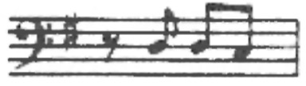
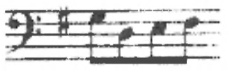
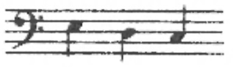
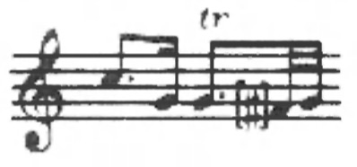
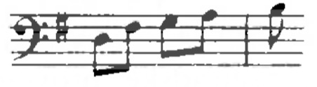

Komorne skladbe A. Ivančiča v nasprotju z njegovimi simfonijami doslej se niso bile objavljene. Izbor, ki ga prinaša pričujoča izdaja, predstavlja ta del skladateljevega opusa s petimi sonatami a tre za prečno flavto (ali violino), violo in bas. Kot predloge so pri vseh skladbah služili rokopisi iz glasbene zbirke v Badische Landesbibliothek Karlsruhe, o njih je bilo ze omenjeno, da izvirajo iz glasbenega arhiva badenskih mejnih grofov. Rokopisi izbranih triosonat so delo treh neznanih kopistov: prva sonata izdaja eno, druga, četrta in peta sonata drugo, tretja sonata tretjo roko.
I. Triosonata v G
Predloga je bil rokopis Ms. 235 z napisom na naslovni strani: »Trio ex G/ Flauto Traverso/ Viola Obligato/ e/ Basso/ Del Sigr Ivanschiz«. Znani so se štirje primerki te kompozicije: eden je v Glasbenem oddelku Moravskega muzeja v Brnu (A 12.614), dva v Univerzitetni knjižnici prav tam (Skr 17-525.708 M 266, Skr 17-525.718 M 262), eden pa v muzeju Helikon v Keszthelyju na Madžarskem (No. 2077). Vsi štirje so za violino, violo in bas. Prvi od teh rokopisov, rajhradske provenience, žal, nepopoln, ker mu manjka basovski part, ima letnico 1762. Ta rokopis je bil uporabljen kot subsidiarna predloga glede dinamičnih znamenj, ki jih v badenski kopiji ni. Skladbo navajata tudi kataloga Breitkopf (1767, Suppl. II, str. 23) in Waldburg-Zeil (1767, str. 40).
II. Triosonata v C
Predloga je bil rokopis Ms. 227, njegov naslov se glasi: »Sonata/ a/ Flauto/ Viola/ col Basso/ Del Sigor Ivanschiz«. Drugi primerek te triosonate ima benediktinska opatija Lambach (No. 388), na notranjih straneh platnic rokopisa skladateljevih Litanij v D, ki jih hrani Glasbeni oddelek Narodnega muzeja v Pragi (XI A 163), pa se je našel zapis sopranskega glasu vseh njenih treh stavkov. Triosonato omenjajo katalogi Sigmaringen (1766, str. 31), Breitkopf in Waldburg-Zeil. Prvi instrument je v vseh teh primerih violina, tonaliteta kompozicije pa B.
III. Triosonata v C
Predloga: rokopis Ms. 230 z naslovom: »Sonata/ a/ Traverso o Violino/ Alto Viola/ e Violoncello/ Del Sige. Ivanczicz«. To bi utegnila biti skladateljeva najbolj priljubljena komorna kompozicija. V razvidu je namreč se pet drugih primerkov, prvi v opatiji Lambach (No. 254), drugi v Univerzitetni knjižnici v Brnu (Skr 17-525.714 M 254), tretji v Literarnem arhivu Slovaške Matice v Martinu (D 1-352) in dva v Univerzitetni knjižnici v Münstru (Ms. 437, Ms. 867). Skladbo navajajo katalogi Sigmaringen, Breitkopf, Ringmacher (1773, str. 96) in glasbeni inventar samostana Rajhrad (1771). Sopranski instrument je v vseh teh primerih violina.
IV. Triosonata v G
Predloga: rokopis Ms. 225, njegov naslov: »Sonata a Tre/ Flauto/ Viola/ Col Violoncello/ Del Sigor Ivanschiz«. To triosonato navaja kot Ivančičevo tudi katalog Waldburg-Zeil in sicer kot skladbo za dve violini in bas v F duru. Ta rokopis ni ohranjen. V tej tonaliteti in zasedbi se je skladba ohranila v samostanu Seitenstetten v Spodnji Avstriji kot »Divertimento Notturno« Josepha Haydna (gl. Hoboken I, str. 500). Katalog Breitkopf (1767, Suppl. II, str. 16) jo ima med trii Franza Aspelmayra (1728—1786), vendar je med doslej znanimi deli tega dunajskega skladatelja ni najti.
V. Triosonata v D
Za predlogo je bil rokopis Ms. 229, napis na njegovi naslovni strani: »Sonata a Tre/ Flauto/ Viola/ Col Violoncello/ Del Sigor Ivanschiz«. Primerek je po doslej znanih podatkih unikat. Katalog Breitkopf (1766, Suppl. I, str. 28; 1767, Suppl. II, str. 16) navaja to kompozicijo kot Trio za dve violini in bas v B duru F. Aspelmayra, a doslej se med njegovimi deli ni našla.
Urednik se je pri rekonstrukciji partitur ravnal po načelih, ki so običajna za izdaje, namenjene tako znanstveni kot praktični izvajalski rabi. Pisava, vstevši kratice za dinamiko, znake za ponavljanja, appoggiature in akcidence, je modernizirana, a izvirni notni tekst je dosledno spoštovan. Kar je posegov vanj, so naznačeni z oglatimi oklepaji, bodisi da gre za popravke napak, ki so jih očitno zagrešili kopisti, bodisi za uredniške dodatke, kot so — v virih pomanjkljivi, nedosledni, večkrat tudi nejasni — znaki za artikulacijo, dinamiko, okraske in opozorilna znamenja. Nekaj primerov je podrobneje obravnavanih v zadnjem delu tega poročila.
Posebno vprašanje so appoggiature. V predlogah, kot je to značilno za rokopise iz 18. stoletja, so pisane nedosledno in z ne vselej jasnim razlikovanjem med kratkimi in dolgimi appoggiaturami. To je pri izdelavi generalnega basa včasih oteževalo pravilno ritmično razporeditev akordov v čembalistovi desni roki. Navzlic temu urednik v appoggiature ni posegal več kot toliko, da je poenotil njihovo pisavo na identičnih mestih.
Oštevilčenj in oznak za generalni bas ni v predlogah nikjer, razen tega part violončela pogosto tudi ni zgled zanj. Pri izdelavi generalnega basa je bil ta part dosledno prenesen v čembalistovo levo roko, razen v primerih generalnemu basu tujih repeticij ali drobnih pavz na prvo dobo. Akordi niso vneseni v part čembala na mestih, kjer gre za enoglasje ali oktave. Pomanjkljivo gibanje v glasovih flavte in viole v prvih triosonatah je narekovalo gibanje v spremljavi, le-to pa v realizaciji generalnega basa seže proti običajem 18. stoletja ponekod čez flavtin diskant. V četrti triosonati je continuo za levo roko reduciran, ker tu ne gre vec za figurirani bas, ampak za izrazite pasaže v violončelu.
I. Triosonata v G
Adagio
t. 1, flavta
v nekaterih primerkih je ta takt pisan s punktirano drugo četrtinko in triolami na koncu.
Menuet-Trio
t. 60, viola
zadnja osminka v predlogi pomotoma c'.
t. 64, bas
tretja nota v izvirniku h, popravljena v g po analogiji s t. 66.
Allegro
t. 2 in 45, bas
v predlogi  pri tem vzporedne oktave z violo. Ker verjetno ne gre za napako kopista, je popravek šteti kot predlog,
t. 11, flavta
tretja osminka v izvirniku d”, popravek v h’ glede na t. 15 in 54; tako tudi v rokopisu rajhradske provenience.
t. 11, viola
zadnja osminka fis'.
t. 50, flavta
prve štiri šestnajstinke v predlogi notirane oktavo nize.
t. 57, bas
v predlogi  nedvomno pogrešek prepisovalca,
t. 60. flavta
izvirnik ima na prvo dobo a' v vrednosti cetrtinke; usklajeno st. 17.
II. Triosonata v C
Andante
t. 9, bas
v predlogi  s tem vzporedne oktave s flavto in vzporedne kvinte z violo; popravek po analogiji s t. 43.
t. 12, flavta
zadnja osminka v izvirniku gis”;
t. 14, flavta
prva osminka na tretjo dobo f” (z razveznikom!) in tako se v t. 15; popravljeno glede na ustrezna mesta v reprizi (t. 46, 48 in 49).
Allegro molto
t. 1, flavta
četrta nota v celotonskem odnosu s predhodno in naslednjo, tako tudi v vseh identičnih taktih (t. 2. 29, 30, 33. 34) v tem glasu ali violi; boljši bi bil poltonski odnos: 
III. Triosonata v C
Allegro
t. 28, viola
v predlogi zadnja osminka e'.
IV. Triosonata v G
Largo
t. 16, 1 7, bas
v izvirniku  transponirano oktavo nize, kot ima predloga na tem mestu v reprizi (t. 42, 43).
V. Triosonata v D
Adagio
t. 8, viola
v rokopisu prva šestnajstinka gis; enako na identičnem mestu v t. 26 cis’.
t. 11, bas
polovinka na tretjo in četrto dobo v predlogi g (z razveznikom!); popravek glede na ustrezno mesto v t. 30.